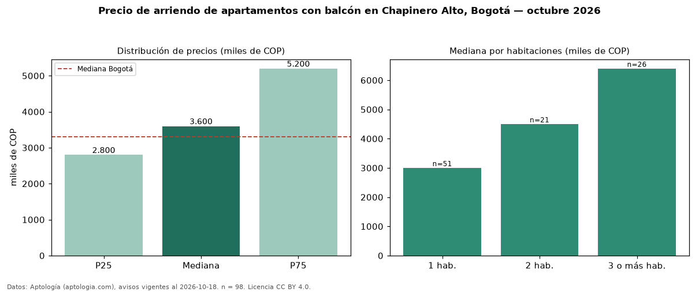

Precio de arriendo de apartamentos con balcón en Chapinero Alto, Bogotá — octubre 2026
En Chapinero Alto (localidad de Chapinero), Bogotá, la mediana de canon mensual de apartamentos con balcón es COP 3,60 millones, según 98 avisos vigentes. Frente a la mediana de todos los apartamentos en arriendo de Chapinero Alto (COP 3,33 millones, n = 164), queda 8 % por encima; este segmento reúne el 60 % de esos avisos. Por metro cuadrado, la mediana es COP 56.231/m² al mes (n = 96), 2 % por encima del conjunto de referencia (COP 55.279/m²). El área mediana anunciada es 63 m². El segmento con más oferta es el de 1 habitación (51 avisos, mediana COP 3,00 millones); pasar de 1 habitación a 3 o más habitaciones cambia la mediana +113 %. La administración mediana declarada es COP 650.000 al mes (n = 54), aparte del canon. La mitad central de los avisos va de COP 2,80 millones a COP 5,20 millones (razón 1,9), una dispersión moderada. El estrato más frecuente es 4 (72 % de los avisos con estrato). Datos: Aptología (aptologia.com), CC BY 4.0 — https://www.aptologia.com/arriendo/bogota/chapinero-alto. Archivos: PDF, CSV con las cifras y gráfica PNG.

| Avisos únicos | 98 |
|---|---|
| Percentil 25 | COP 2.800.000 |
| Mediana | COP 3.600.000 |
| Percentil 75 | COP 5.200.000 |
| Mediana por m² | COP 56.231 |
Fuente: avisos vigentes de portales inmobiliarios recopilados por Aptología, deduplicados (mínimo 30 avisos únicos por celda). Precios pedidos, no cerrados. Fecha: 2026-10-18.